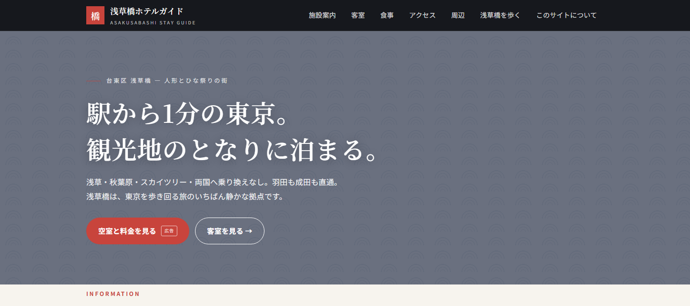
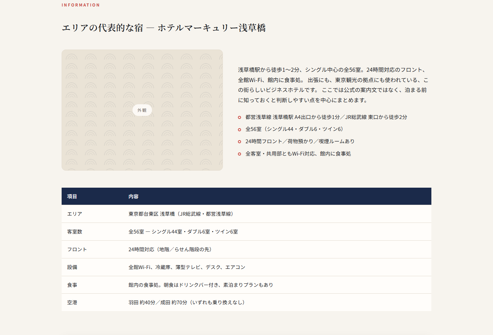
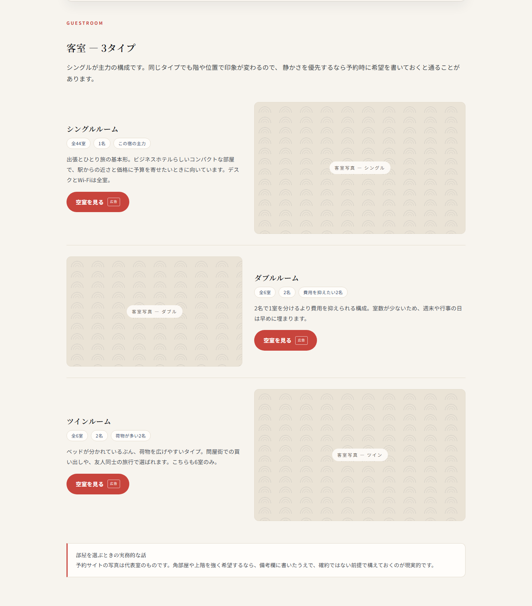
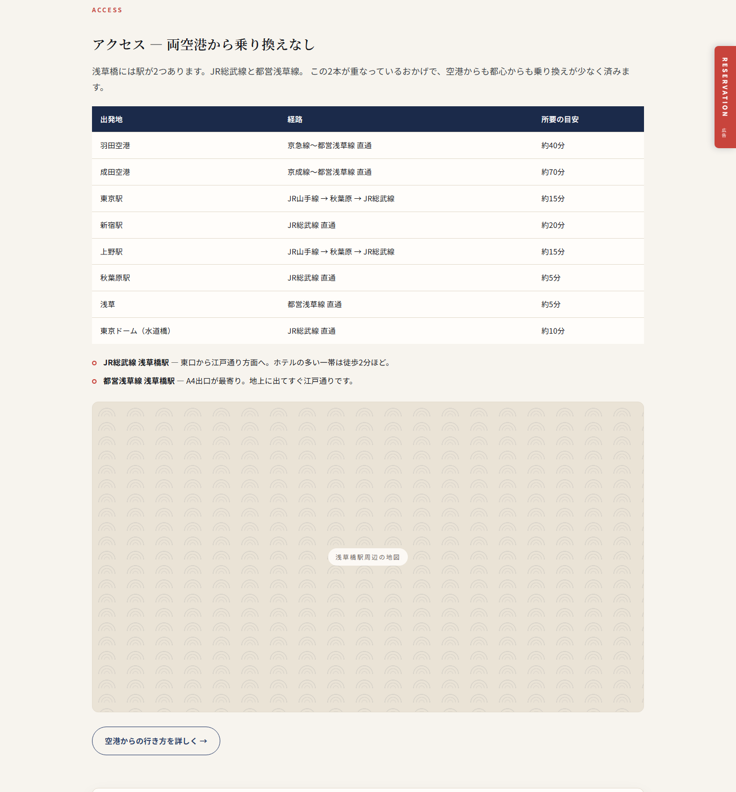
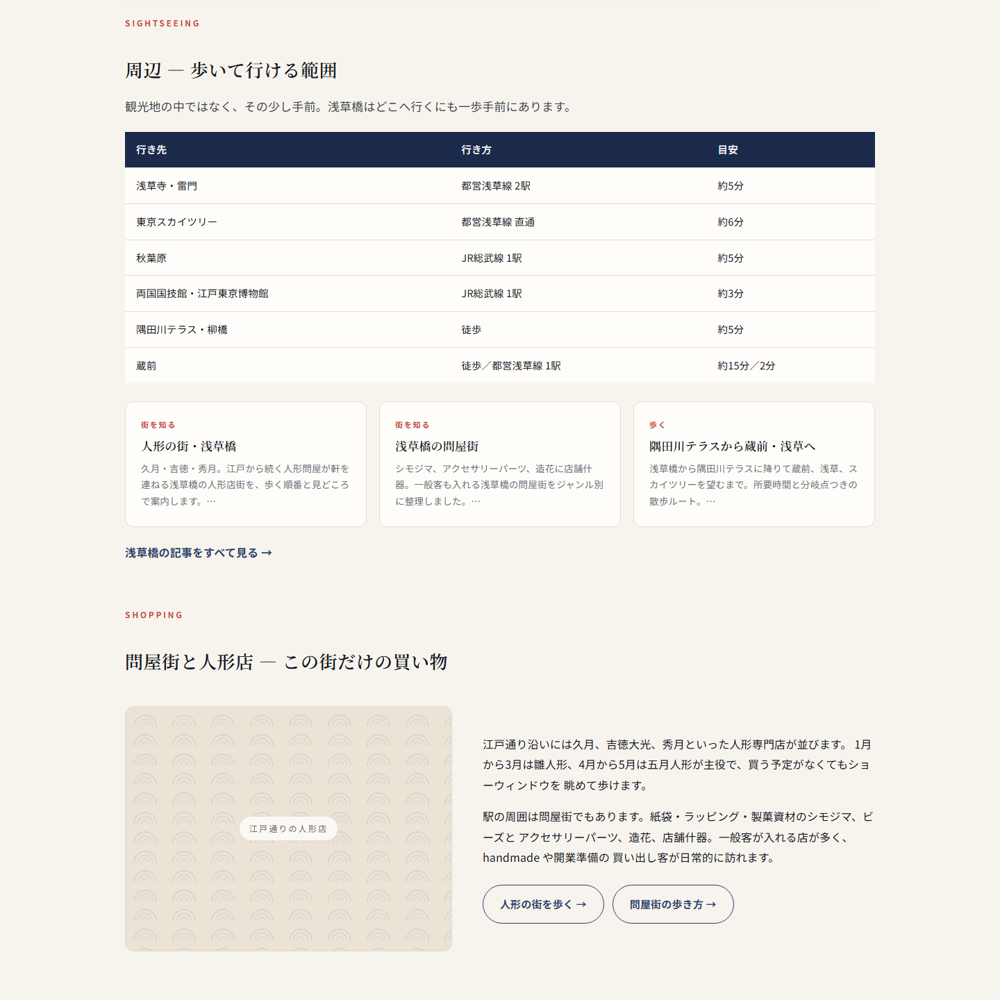
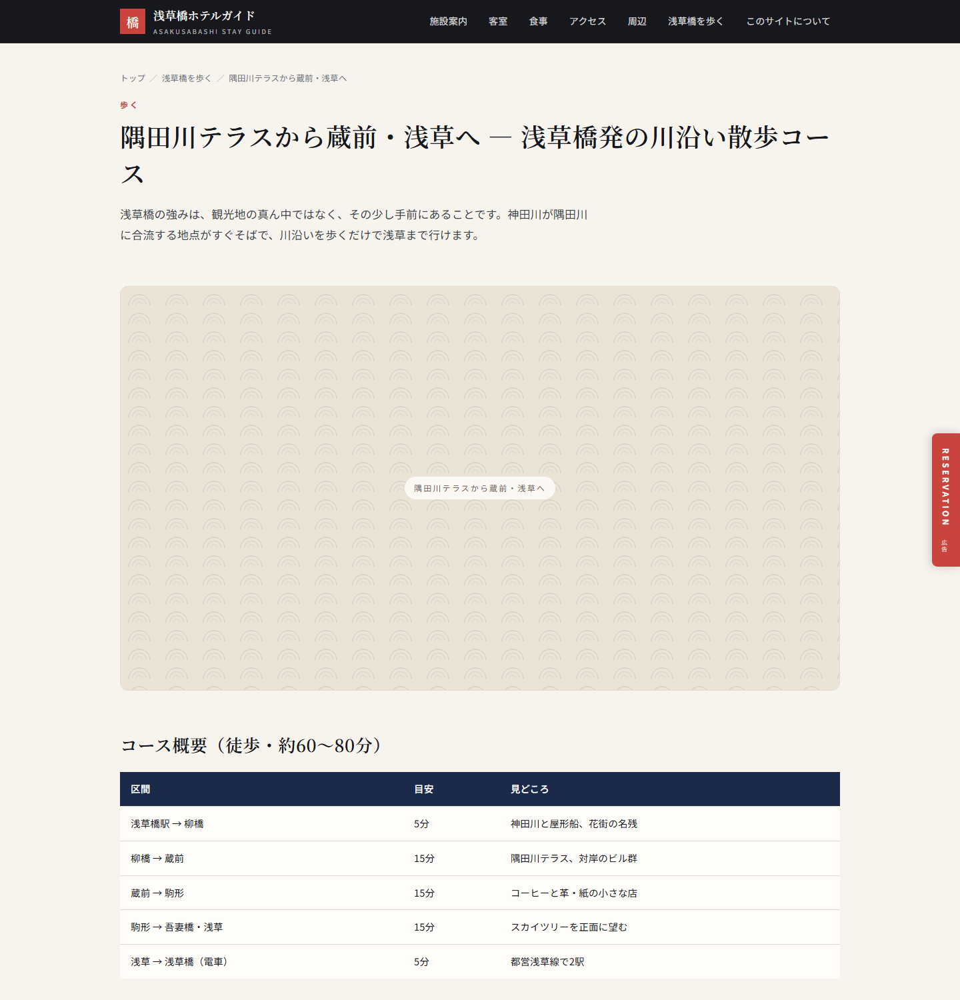
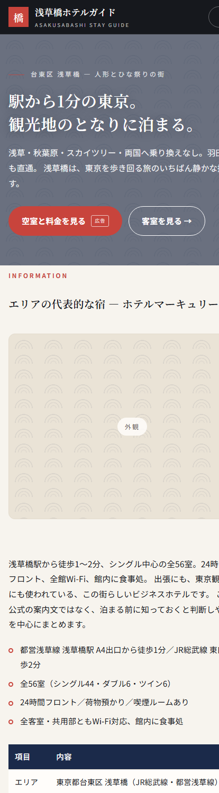

浅草橋ホテルガイド — build, structure, and the content plan that makes it a working booking-affiliate site
The domain is a good asset being used in a way that guarantees it cannot rank. hotelmercury.jp currently serves a scraped copy of a hotel's old official website. That hotel is still trading under new management, with its own live official site. Google has one brand entity to attribute, and it does not attribute it to us.
The rebuild keeps everything genuinely useful about the old site — the rooms, the access data, the neighbourhood — and drops every claim to be the hotel. It goes live as an independent Asakusabashi stay guide that reviews the property and books it through affiliate links. That is both the honest position and the only position with a ranking path.
Only four pages on the live domain are real. /access/, /areaguide/,
/restaurant/ and /page9596/ return the scraping vendor's own advertisement:
The DEMO version only includes 4 pages: http://hotelmercury.jp /contact.html /en.html /guide.html Visit https://www.waybackmachinedownloader.com/... to buy a fully functioning site.
Google indexes those pages. Four of the site's eight URLs are an advert for a scraping tool.
The property trades today as Tabist ホテルマーキュリー 浅草橋, with a live official site at
hotelmercury.info and listings on Jalan, Booking.com, Agoda, Trivago and Yahoo Travel. Our page
still carries the title 「公式サイト」, the hotel's phone and fax numbers, and its
reserve@ address.
All reservation links point at sec.489.jp/v3/...?group_id=41&hotel_id=56, the previous
operator's own booking engine: plan list, member registration, my-page, cancellation, enquiry. Any booking
made through the site today earns us nothing and creates an obligation we cannot honour.
Eight brochure pages of duplicate text. The only keyword the site targets is the brand name, which is the one keyword it cannot win.
| Decision | What it means in the build |
|---|---|
| Independent guide, not an official site | New brand 「浅草橋ホテルガイド」. Copy is third person throughout — "the hotel is…", never "our hotel". No 公式 anywhere in a title, heading or social preview. |
| No contact impersonation | The hotel's phone, fax and email are gone. So are all member-area and reservation-engine links. We cannot take a booking, and the site says so. |
| Disclosure on every page | Footer states we are not the operator and that booking buttons are affiliate links. Every CTA carries a 広告 label, which Japan's ステマ規制 requires. |
| Keep what is useful | Room types, facilities, access times, area knowledge — all retained and rewritten, because that is what a traveller actually searches for. |
| Monetise through Travelpayouts | Same account and marker as the shibuyahotel hotel pages, with its own per-property sub-marker. |
A static site — no CMS, no database, no PHP. Fifteen HTML files generated from one Python script, copied to the server as plain files. It cannot be hacked through a plugin, it cannot go down because a database is busy, and it loads in well under a second.
The homepage is a single hotel page with anchored sections, in the same order as the shibuyahotel subdomain builds (hotelindigo, bookteabed, alldayplace):
/ → hero
#information the property, key facts table
#book Booking.com search widget
#guestroom 3 room types, one booking button each
#restaurant in-house dining + the neighbourhood's izakaya
#facility what is in the building
#access airports and major stations
(direct book card)
#sightseeing distances to Asakusa, Skytree, Akihabara, Ryogoku
#shopping the doll shops and the wholesale district
#faq six questions, including "can I book here?" → no
Separate pages: /area/ hub plus 8 articles, /about/, /contact/,
/en/. There are no standalone room or access pages — that content lives on the one-pager, so
the site never competes with itself for the same search.







Every booking link on the site is generated by one function, so a network change or a new tracking code is a one-line edit and no link can be added without its disclosure label.
booking.tpx.li/<code>, 44 instances, every one carrying
rel="sponsored noopener", a 広告 badge, and a sub_id naming its position
(hero, rail, room-single, direct, faq,
sticky, area-<slug>, en). After launch those sub-IDs tell us
which placement actually converts.trs=533368, promo_id=9240,
campaign_id=84, shmarker=416241.HotelMercuryAsakusabashi. Marker 416241 is your
Travelpayouts marker, as on the other hotel pages; the sub-marker separates this property's earnings.Outstanding: the deep-link code is still the placeholder PENDING-MERCURY.
Once the Travelpayouts link for this property exists, it drops into one line.
The generator refuses to produce a site that reintroduces the original problem. It fails the build if any
page contains 489.jp, e-concierge, the hotel's phone or fax number,
reserve@hotelmercury, or the word 公式 in a title, heading or social preview.
$ python build.py built 13 pages -> dist booking links: 44 clean: no banned identity strings
Someone editing the copy in six months cannot quietly put the site back into the position that broke it.
| File | Role |
|---|---|
build.py | Layout, booking helpers, structured data, the safety guard |
content.py | All copy. Area articles are a list — adding one is a dict entry |
assets/css/site.css | The entire design. Colour and type tokens at the top |
assets/js/site.js | Mobile menu and sticky bar. 35 lines, no libraries |
dist/ | Output — this is what gets copied to the server |
Every image position is a labelled slot with a fixed aspect ratio, so photography drops in later without touching layout. For this local preview they render as a 青海波 wave pattern rather than grey boxes.
The Travelpayouts photo route is closed. Travelpayouts retired Hotellook; the lookup, hotel-photos and image-CDN endpoints all return 404 now, with or without an API token — the token itself is still valid, the flight endpoints answer normally. So the live site needs one of:
Reusing the old site's photos is not an option: they are the hotel's property, and the point of this rebuild is to stop borrowing the hotel's identity.
The hotel page converts; it does not attract. Search traffic for a single budget property is small and owned by the OTAs. The traffic is in the region: people deciding where in Tokyo to stay, how to get in from the airport, what Asakusabashi even is. That is what the blog is for.
WordPress in a subdirectory: hotelmercury.jp/blog/, with the static one-pager staying
at the root. A subdirectory keeps every article's authority on the same host as the money page. A subdomain
splits it, which is why the shibuyahotel subdomain pages have no blog at all.
Operationally that means one PHP pool and one database on the box, serving only /blog/ —
the homepage and area pages stay static files. If we would rather not run WordPress at all, the eight area
articles already prove the alternative: they are static pages from the same generator, and adding a ninth is
a dictionary entry. Recommendation: start static, add WordPress when the publishing volume justifies a
CMS or when someone other than us needs to post.
| Cluster | Example targets | Why |
|---|---|---|
| Stay-decision | 浅草橋 ホテル 安い／駅近／浅草橋 vs 浅草 どっちに泊まる／浅草橋 一人旅 宿 | Closest to booking intent. Two are already written. |
| Airport & transit | 羽田空港 浅草橋 アクセス／成田 浅草橋 直通／深夜着 東京 泊まる | High volume, evergreen, and it is this property's genuine advantage. |
| The district | 浅草橋 人形 店／問屋街／ビーズ 浅草橋／シモジマ 本店 | Low competition, strongly local, brings the craft and handmade audience. |
| Walks & itineraries | 隅田川テラス 散歩／蔵前 カフェ／浅草橋 から 浅草 徒歩 | Long dwell time, natural internal links to the stay pages. |
| Events & seasons | 鳥越祭／三社祭 宿／隅田川花火 ホテル／雛人形 シーズン | Predictable annual spikes. Publish two months ahead, refresh yearly. |
| Nearby comparisons | 秋葉原／上野／両国／蔵前 に泊まる | Captures searchers who have not yet chosen a neighbourhood. |
| English | where to stay in Tokyo near Narita express／Asakusabashi guide | Inbound traffic monetises through Booking.com/Agoda at higher rates. |
Every article follows the same shape, already implemented in the eight built pages: a lede that answers
the question in two sentences, two to four sections with a real table or list, a practical tip box, one
booking block, and three related links. The booking block is generated, never pasted, so the
rel="sponsored" attribute and the 広告 label cannot be forgotten.
Cadence that works without risking a spam signal: 4–8 substantial posts a month, each genuinely useful, rather than a bulk import. Volume on a freshly cleaned expired domain is the one thing we know triggers trouble.
/#guestroom and /#access — the money sections.area-<slug>, so we can see which
topic produces bookings, not just which button.BOOKING["url"].dist/ into the docroot. There is nothing else to install./guide/ → /#guestroom, /areaguide/ → /area/,
/restaurant/ → /#restaurant, /access/ → /#access; and 410 Gone for
/page9596/, /_templates/*, /_administrator/* — the scraper's demo
pages need to leave the index, not redirect into it.| Risk | Mitigation in this build |
|---|---|
| Google still associates the domain with the hotel's old official site | New brand, new title, no 公式 claim, disclosure page, area-first content. We are asking to rank for 浅草橋 queries, not for the hotel's name. |
| Expired-domain abuse signal | The site is substantively different from what the domain used to host, and useful in its own right. The thing policies punish is reusing a domain's history to float thin content; the area guide is the opposite of thin. |
| Publishing volume outrunning quality | No bulk imports. Measured cadence, original writing, per-post review before publishing. |
| Hotel or Tabist objects to the page | Nothing claims affiliation, the disclosure is explicit, and no contact details of theirs appear. We send them bookings. |
| Affiliate programme rules | Every link is labelled 広告 and marked rel="sponsored" at generation time, satisfying both Google and the Japanese disclosure requirement. |
416241.HotelMercuryAsakusabashi; say if you want it named differently./blog/; if it
stays with me, the static generator is faster and safer. This is the only decision that changes the stack.Local build, 23 September 2026. Preview: python build.py && python -m http.server 8787 --directory dist from
server-build/apps/hotelmercury/. Screenshots in this document are of that build; image areas
shown as patterned panels are the slots awaiting photography.